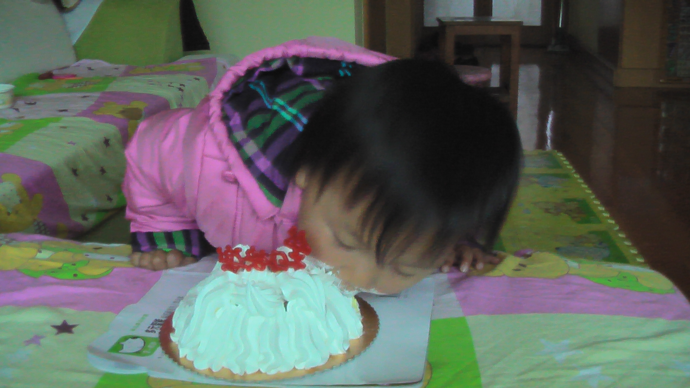
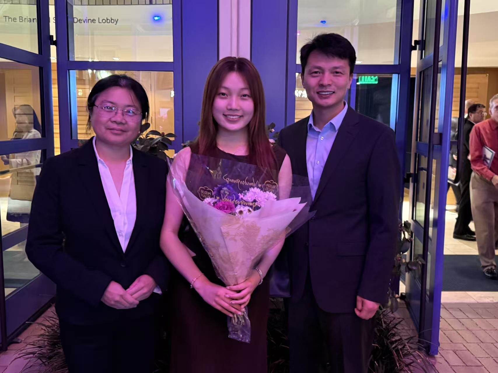

Cathy Ji
"You can't separate peace from freedom because no one can be at peace unless he has his freedom." -- Malcolm X
Growing Up

My name is Cathy and I recently turned 18 years old. I was born in Shanghai, China, and moved to San Diego as a child, where I’ve grown up all my life. I speak fluent Mandarin and some French. As a child, one of my favorite pastimes was reading. My favorite book series used to be Percy Jackson and the Olympians, which introduced me to Greek mythology. Currently, my favorite book is White Nights by Fyodor Dostoevsky which I enjoy for its emotional depth and existential inquiries. I also love reading poetry, especially poems by Robert Frost and Thomas Hardy because they are simplistic but resonant.
High School

I am a Senior at Canyon Crest Academy, where I am an officer in the Envision Conservatory for the Humanities, president of Youth Health Coalition, and part of Speech & Debate and Mock Trial. I joined Conservatory in my Sophomore year, where I conducted research on harmful beauty standards perpetuated by consumerism from the past century. I’ve competed in the National High School Ethics Bowl for three years, leading my team of 7 to rank in the top 3 regionally and place 13th out of 550 national teams in 2025. I also recently named a 1st place winner of the Kyoto Prize Scholarship for my work in advancing my community. Two of my favorite classes that I took are AP Art History, where I learned about different art periods, and Anatomy Physiology, where I did fun dissections. I am interested in studying economics and law in the future.
Interests

In my free time, I enjoy hanging out with friends, whether that be going to the beach, watching a new episode of Single’s Inferno together, thrifting, or getting boba. My favorite boba place is Heytea, where I usually get the Mango Cloud or Triple Matcha drinks. I also enjoy listening to R&B and playing piano, where I’m learning right now to play a song by Jay Chou. Currently, I am watching Death Note and Jujutsu Kaisen. One fun mobile game that I play is called Identity V, which is an asymmetric hunter versus survivor game. I’ve played for a year now, and my favorite characters to play are Naiad and Doctor.